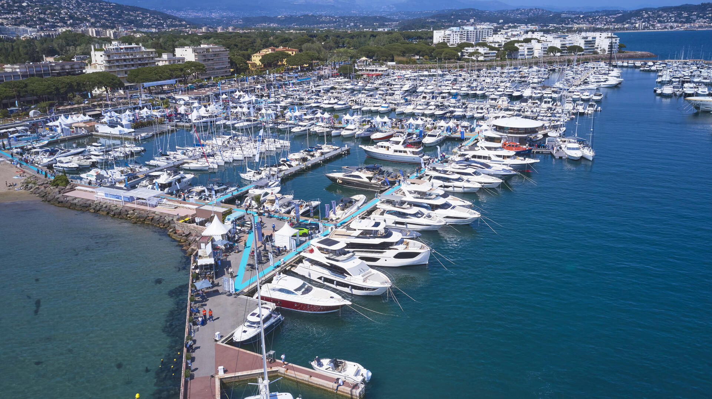

Qui suis-je ?
Mon intérêt pour l'informatique s'est toujours construit par l'expérimentation et la pratique, c'est ce qui m'a attiré vers les Réseaux et la Cybersécurité : configurer des équipements, chercher l'origine d'une panne, et sécuriser des architectures. Aujourd'hui, je recherche une alternance pour confronter cette passion technique aux véritables enjeux d'une entreprise.
Expérience Professionnelle
Agent Portuaire (Emploi Saisonnier)
- Assistance à l'amarrage et au départ des navires.
- Entretien des installations portuaires et surveillance des équipements.
- Accueil et orientation des plaisanciers.

Mes Passions
Automobile
Passionné par l'automobile en général, avec un attrait particulier pour le Rallye et le GT. J'apprécie la précision, la technique et l'ingénierie qui se cachent derrière ce milieu.
Sport
J'ai pratiqué le football plus jeune, ce qui m'a inculqué l'esprit d'équipe. J'ai également fait 6 ans de tennis, un sport qui m'a appris la persévérance et la maîtrise de soi.
Randonnée & Bivouac
J'aime profiter du cadre exceptionnel de notre région pour partir en randonnée. C'est pour moi un excellent moyen de me ressourcer, de faire le vide et de cultiver mon endurance.